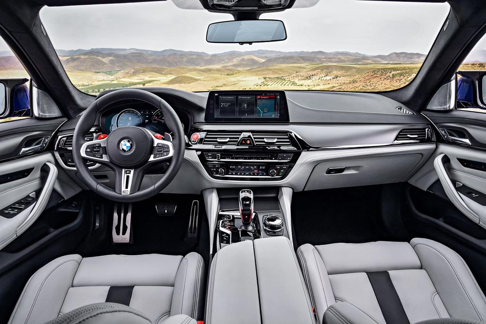

Салон

Интерьер БМВ М5 модельного 2017-2018 года особо подчеркивает спортивность седана благодаря рулевому колесу, новой графике на панели приборов с цифровым спидометром и тахометром, вставками изготовленных из карбона, металлическим накладками расположенных на педалях, дверных порогах и конечно же креслам. Седан М серии серийно оснащен M сиденьями с кожаной обивкой Merino и электрической регулировкой. Опционально доступны недавно разработанные многофункциональные сидения, которые характеризуются особой структурной оболочкой и лучшей боковой поддержкой. Панель приборов имеет дополнительно с правой стороны индикатор, который предупреждает об достижении максимальных оборотов. Важная информация выводится на лобовом стекле благодаря проекционному дисплею площадь которого на новом седане BMW M5 увеличена на 70% и доступна с отображением информации с навигационной системы. Тест драйв bmw m5
Экстерьер
Спереди новинка получила более агрессивный бампер с массивными воздухозаборниками и немного иную решетку радиатора со сдвоенными вертикальными планками. На капоте автомобиля вырос традиционный горб, а на передних крыльях появились воздухозаборники.
На крышке багажника новой БМВ М5 F90 установлен спойлер, при этом немцы также заменили задний бампер и диффузор. Плюс «заряженный» седан получил иную выпускную систему с четырьмя патрубками круглой формы. Напомним, что у обычной «пятерки» патрубков два, и они трапециевидные.
В базе на колесах четырехдверки красуются 19-дюймовые диски с покрышками размерностью 275/40 и 285/40 спереди и сзади соответственно. Впрочем, за доплату доступны и колеса диаметром 20″. А еще новая «эм пять» получила исполнение First Edition, тираж которого ограничен 400 экземплярами. Такая версия щеголяет матовой окраской кузова с черными глянцевыми элементами. Понравилась?